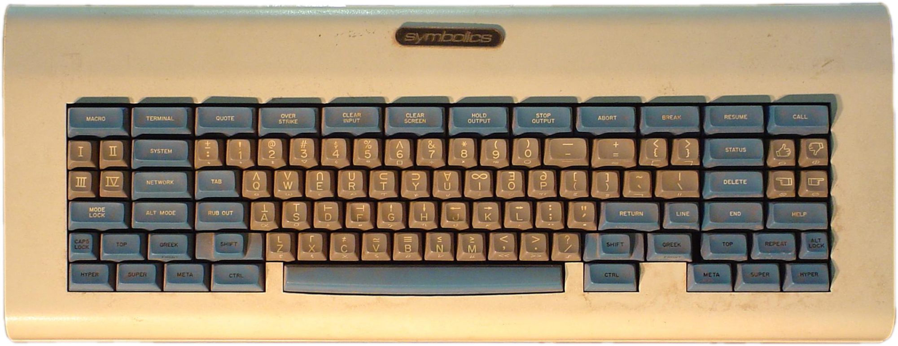

Recently I’ve started investigation on the most effective shortcuts for Emacs. Already for a long time I’ve been using Caps Lock remapped to Esc when pressed alone, and Ctrl-Key when pressed with any other key.
I didn’t use Emacs with native bindings for a long time, because of wrist related issues, which immediately appeared after using pinky for pressing long chords which normally included Ctrl-C combination. This is why I used Spacemacs and later Doom Emacs as the configuration of choice.
And this worked relatively good, I used the same bindings for Vim in terminal, and no RSI since pinky wasn’t overloaded with long presses. But something were not so good, I needed to keep a context in the head and using special modes like eshell or repl weren’t fun because of context switch losses.
So I’ve started reading the book Mastering Emacs, which I definitely recommend, I decided to give a try to alternative solutions for Emacs keybindings.
First of which were using interesting combinations for the keychords like pressing J+K equals to Control and pressing F+D equals to control. The idea was to reduce pressure on pinky by moving control to the “home” row. This worked to some extent. Long combinations with Ctrl, like “C-c C-o C-r” needed to have very uncomfortable key sequences. Apart from this constant typos where annoying, when you switched keys too fast. So I dropped this option and started looking for new ways.
I realised, that Ctrl should not be pressed by pinky, it should be just convenient enough to reach. Then I saw old design of the Space Kadet keyboard, and it had Control right near the Space key.

Whan I swapped Command and Control keys, man, that was real enlightenment, literally everything started being comfortable. Look, Ctrl-x-s is just a single row. Ctrl-c feels natural, because you literally use mighty thumb and index fingers. Movement with Ctrl-a, Ctrl-e, Ctrl-n and Ctrl-p just started having much more sence and convenience. Most of the Emacs combinations with Ctrl-C and Ctrl-X are sane now.
It comes as a bonus using readline compatible utilities in terminal.
I really think swapping Caps Lock and Control is a BAD advice that did enourmous harm for neglecting Emacs than anything else. Either Windows based keyboards having Alt, or Mac based keyboards having Command, should be swapped with Control at least in Emacs and other readline applications. Do this right now using Karabiner Elements free application for MacOS and never experience any RSI.
Using Karabiner Elements you can make this change only for the several applications, like Emacs and iTerm, and not the system-wide.
Update:
In order to remap command to control you don’t event need Karabiner Element, just map command to control using the following snippet
(setq ns-modifier-command 'control)
In iTerm it’s also easy to do, open
Preferences -> Keys -> Remap modifiers
and change the settings. One more trick is how to switch between apps from iTerm using Cmd+Tab when it’s remapped?
Here is how to do this https://gitlab.com/gnachman/iterm2/-/issues/6394
You can add exceptions to keyboard remapping, but it’s not very intuitive. Add a key mapping to Prefs > Keys. First, select the action Do Not Remap Modifiers. Then set the shortcut to Cmd-Tab (by pressing the physical cmd key plus tab).
RSI stands for repetitive stain injury https://www.nhs.uk/conditions/repetitive-strain-injury-rsi/